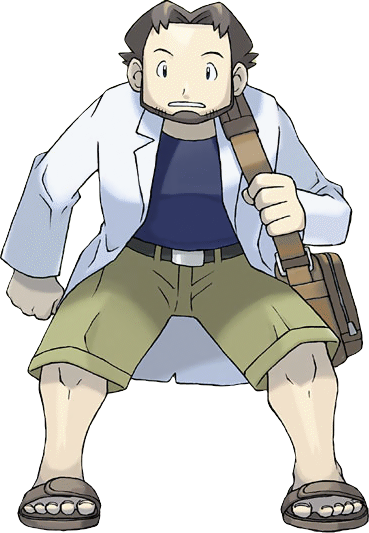
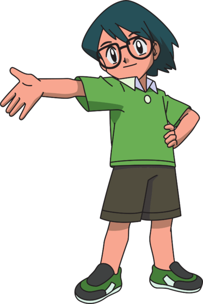
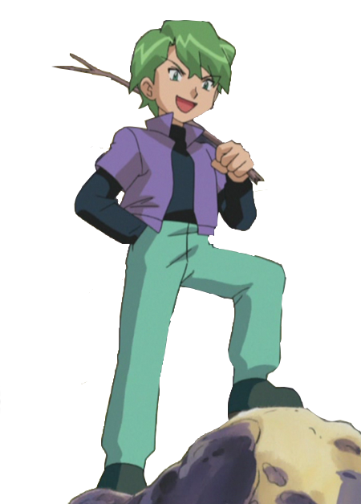
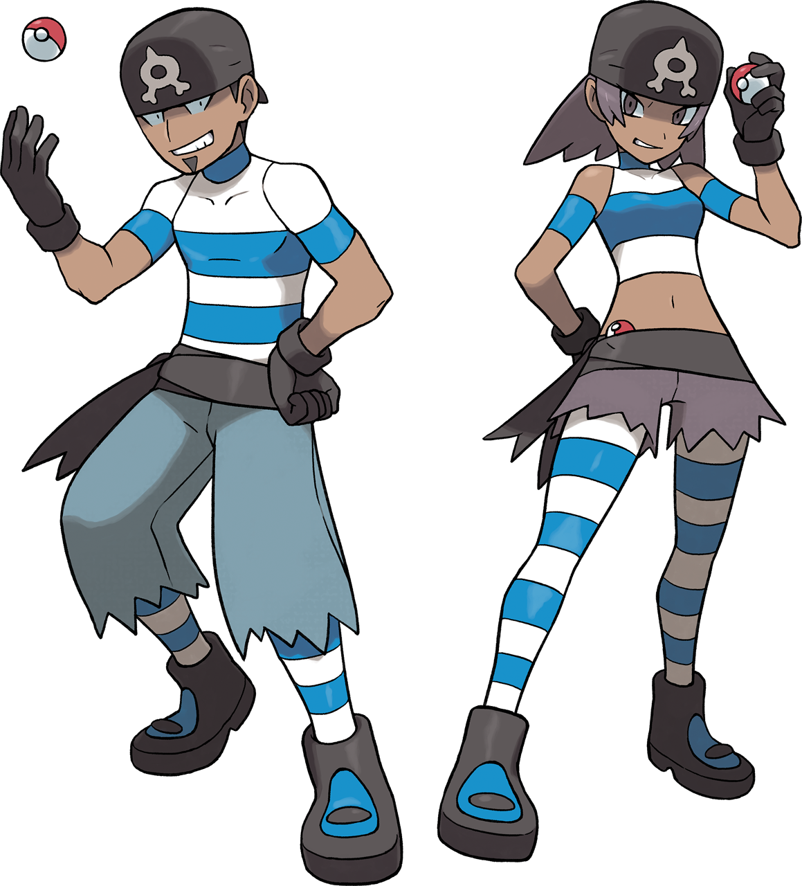

The characters
Throughout Hoenn, Ash has met friends and foes alike. Use the menu to be sent to a specific character or keep scrolling to read them all.
Please note that this is not an extensive list of characters which appear in Hoenn. Only prominent characters have been featured in this list. The full list of characters can be found on the wiki.
The list will also not feature any cameos from past regions, only characters new to Ash's journey.
Professor Birch

Professor Birch is the professor of the Hoenn region. He is most known for being the expert in Pokemon habitats and distribution. Like all Pokemon professors, Professor Birch is the starting point for all trainers in Hoenn, and where they will be able to recieve their first Pokemon and a Pokedex.
Professor Birch's lab can be found in Littleroot Town, where all trainers in the Hoenn region begin their journey. In the series, Birch's first appearence is picking Ash up after his arrival in Hoenn.
May
May was Ash's first companion during his journey in the Hoenn region. After first meeting in Littleroot Town, May decided to join Ash's journey to learn more about Pokemon. Due to her father being a leader, she was expected to follow in his footsteps. However, she found her true calling in Pokemon contests, and decided to continue participating in them.
At the end of Battle Frontier, May journeys off to the Hoenn region by herself to participate in contests there.
May is also the older brother to Max, who also follows Ash on his journey.
Max

Max is May's younger brother and follows Ash and his friends on their journey. Although he is younger than all of them, he is extremely knowledgeable in many things about Pokemon and helps Ash navigates the Hoenn region. Max joins Ash when he visits Petalburg City, which is Max and May's hometown.
Max only travels with Ash and his friends for the duration of the Hoenn region. At the end of Advanced Battle, Max remains in Hoenn while Ash, Brock, and May journeys to the Kanto region.
Morrison
Morrison is Ash's self proclaimed rival in the Hoenn region. Upon learning of Ash's intention in participating in the Hoenn league, Morrison constantly challenges Ash thoughout his journey.
Once Morrison and Ash were pitted against each other in a battle, Morrison found it extremely saddening he had to battle a good friend. At the end of it, he lost that battle and Ash moved on to the next round.

Drew

Drew is one of May's rivals who would compete against her in Pokemon contests. Over their journey, Drew's goal was to become a better trainer for himself, but also helped May become a better trainer for herself. They would also encounter each other a number of times, where Drew would taunt her and belittle her skills. But, he would give a helping hand when needed.
At the end of Advanced Battle, Drew would travel to Kanto to participate in contests there, where his rivalry with May would continue. At the end of Battle Frontier, he would also travel to Johto as well.
Harley
Harley is another one of May's rivals who would compete against her in Pokemon contests. On numerous occasions, Harley would employ unsportsmanlike tactics to get an advantage, such as embarrasing his opponents and giving inaccurate information.
Harley would also travel to the Kanto region during Battle Frontier and travel to Johto at the end of the season to continue his participation in Pokemon contests.
Team Aqua & Team Magma

Team Aqua (left) and Team Magma (right) are the antagonist teams in the Hoenn region. Team Aqua aims to flood the world by reverting it's state for all Pokemon. On the other hand, Team Magma aims to expand the landmass for humans and human progress. To achieve this, they would have needed to capture the legendary Pokemon Kyogre and Groundon, who can control water and land, respectively.
During Ash's journey, he prevents either team from achieving their goals and helps return the two legendary Pokemon to their slumber.